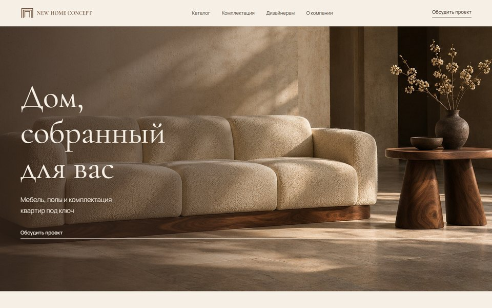

Галерея Вариант A
Прямое развитие макета заказчицы. Интерьер на весь экран, крупная антиква, подчёркнутые текстовые ссылки. Ведёт по всем направлениям по очереди.
- Первым видно
- Гостиная и обещание «дом, собранный для вас»
- Подходит, если
- Главное — образ бренда и все услуги на одной странице